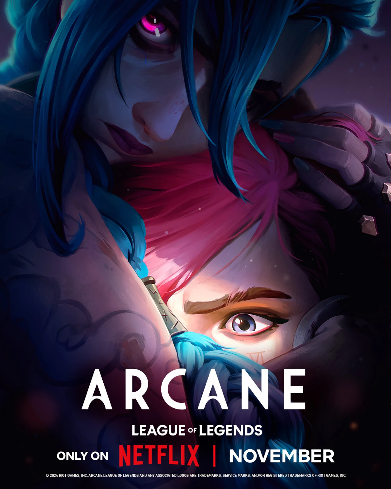
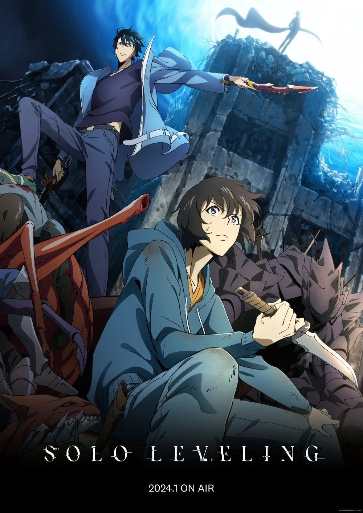
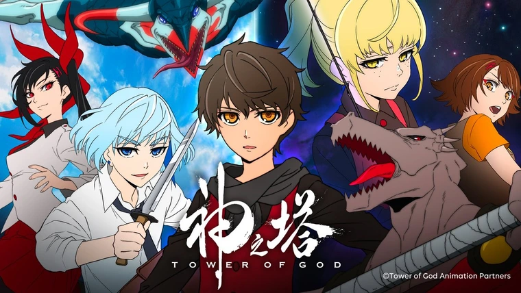
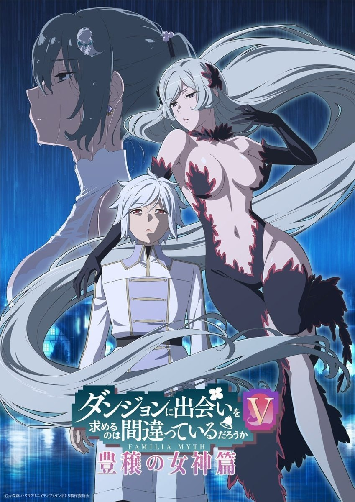
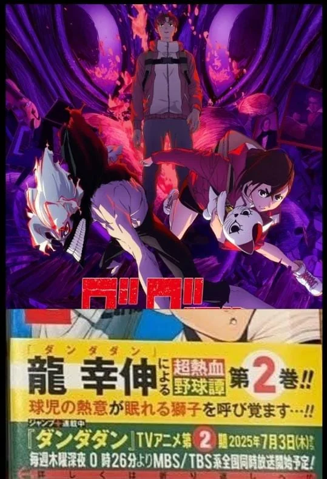

новини
- 

- 
- 
- 
- 
Аніме жанру "система" — це особливий напрямок в японській анімації, де сюжет розгортається навколо героя, який живе у світі з чіткими правилами, схожими на правила комп’ютерної гри. У таких історіях часто присутній інтерфейс, що нагадує RPG-гру: є рівні, статистики, здібності, інвентар, вікно статусу, повідомлення від "системи", а також квести, які треба виконувати. Головний герой зазвичай розвивається поступово, підвищуючи характеристики, здобуваючи нові навички та відкриваючи нові функції або сили, немов він персонаж гри. Цей жанр зазвичай поєднується з фентезі або іссекаєм, де герой потрапляє в інший світ і змушений виживати або досягати якоїсь мети за допомогою системи. Популярність таких аніме пояснюється тим, що глядач бачить чіткий розвиток героя, прогрес, логічну структуру світу та знайомі геймерські елементи. Прикладами таких аніме є "Solo Leveling", де герой отримує систему після смерті, "Log Horizon", де гравці застрягли в грі, і "That Time I Got Reincarnated as a Slime", де герой після переродження отримує систему навичок. Жанр "система" особливо подобається тим, хто любить контроль, розвиток персонажа і атмосферу гри в сюжеті.
Ігри з вікном статусу — це ті, де у гравця є спеціальне вікно або панель, яка відображає всі важливі характеристики персонажа. Такий інтерфейс дозволяє гравцеві в будь-який момент переглянути, скільки у нього здоров’я, яка його сила, який рівень, яку зброю чи обладнання він носить, які активні ефекти на нього діють. Це вікно може бути простим або складним, з багатьма вкладками, де показано інвентар, навички, дерево розвитку персонажа, здібності та пасивні бонуси. Подібні системи особливо популярні в рольових іграх (RPG), де розвиток героя і вибір спорядження є ключовими елементами ігрового процесу. Вікно статусу часто використовується для аналізу боєздатності, підготовки до битв або просто як спосіб порівняти прогрес. У деяких іграх, таких як Skyrim, The Witcher чи Dark Souls, це вікно є дуже важливим, оскільки від правильного розподілу очок та спорядження залежить успіх гравця. Також цей елемент з’являється і в мобільних іграх, виживанках, стратегіях та симуляторах. Завдяки вікну статусу гравець може чітко бачити, ким він став у грі, що ще треба покращити та як правильно розвиватися далі. Це зручний і зрозумілий інструмент, без якого важко уявити сучасні ігри.
На нашому сайтіможна знайти повну інформацію про всі існуючі аніме, подивитись рейтинги, прочитати рецензії інших користувачів. У нас регулярно публікують новини, огляди, стріми, анонси нових релізів, матеріали про консолі, комп’ютери, геймплей та нові системи в іграх. Там також можна знайти статті про фільми, аніме та технології.